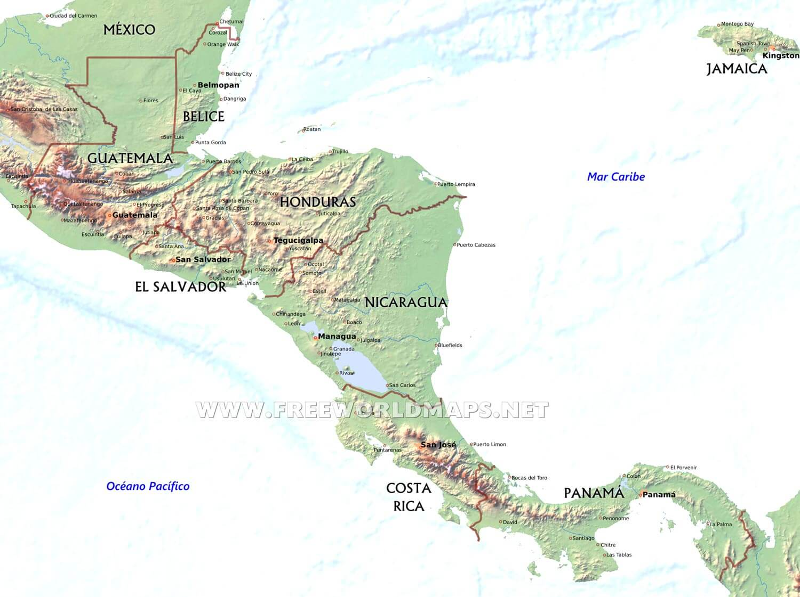

Página web informativa sobre los paises de Centroamerica
INICIO
Centroamérica

América Central, también llamada Centroamérica, es la región geográfica dentro del continente americano comprendida entre América del Norte
y América del Sur. Está rodeada por el océano Pacífico y el océano Atlántico (mar Caribe). Políticamente se divide en siete países
independientes: Guatemala, Honduras, Salvador, Nicaragua, Costa Rica y Panamá.
Desde el punto de vista histórico-cultural,
algunos historiadores delimitan la región comprendida por los antiguos territorios del Reino de Guatemala, es decir, las actuales
repúblicas de Guatemala, El Salvador, Honduras, Nicaragua y Costa Rica, además de las divisiones administrativas al sur y sureste
del istmo de Tehuantepec en México. Desde el punto de vista geográfico la región comprende los territorios ubicados entre este istmo,
y la cuenca del Río Atrato en el Darién colombiano. Su extensión territorial es de 522 760 km² y su población es de 50,690,000
habitantes aproximadamente.
América Central o Centroamérica estaba densamente poblada a la llegada de los europeos, y varias culturas se habían desarrollado en ella,
aunque parece que su grado de complejidad no superó a las existentes en Mesoamérica. Siendo un espacio de tránsito poblacional, se asentaron en
su territorio grupos de las zonas culturales precolombinas de Mesoamérica y de América circuncaribeña tales como los pueblos: lencas, náhuas,
kunas, chortíes, jicaques, payas, chorotegas,
nasos y bribris, que han habitado el subcontinente durante milenios. Las principales familias lingüísticas precolombinas de Centroamérica son la mayense,
la xinca, la lenmichí (lenca, misumalpa, chibchense), estos grupos parecen ser de origen autóctono, mientras que otros grupos tendrían su origen en el centro
y norte de Mesoamérica, como los náhuas (utoazteca) y los chorotegas (otomangue).
Se cree que los primeros habitantes llegaron a Centroamérica luego del arribo de los primeros seres humanos a América, provenientes de Asia septentrional
por el estrecho de Bering o de las islas polinesias hace unos 15 000 años.
Los mayas son los pueblos habitantes de una vasta región que se ubicaba geográficamente en el territorio del sur de México, Guatemala, la zona occidental
de Honduras y otras zonas de Centroamérica. Es especialmente importante su presencia e influencia en los actuales territorios de Guatemala, Honduras y en
departamentos en la parte norte de El Salvador, con una rica historia de unos tres mil años.
En la actualidad siguen existiendo millones de mayas y hablantes de lenguas mayas, relacionadas con las lenguas mayas del período clásico. Las otras familias
lingüísticas de la región no parecen relacionadas con las lenguas mayas y sus orígenes son difíciles de precisar. Aunque recientemente se ha establecido la
existencia de un parentesco filogenético de las lenguas chibchas, las lenguas misumalpas y las lenguas lencas. Lo cual sugiere que esas familias se diversificaron
en Centroamérica, lo cual aporta algo de luz sobre la relación de las poblaciones indígenas conocidas de la región.
Tanto Nicaragua como Costa Rica y Panamá se poblaron gracias a las olas migratorias desde diferentes latitudes y de diferentes grupos étnicos y su mezcla con
los criollos, pueblos originarios, negros, mestizos y afro-mestizos que habitaban la zona durante la colonia. Los tres países ubicados al sur del istmo
centroamericano han recibido inmigración proveniente de Europa, Asia, África y América en diferentes proporciones y contextos históricos como consecuencia
de las necesidades de poblamiento de cada uno y el asilo político para refugiados y exiliados que brindan países como Costa Rica y Panamá.